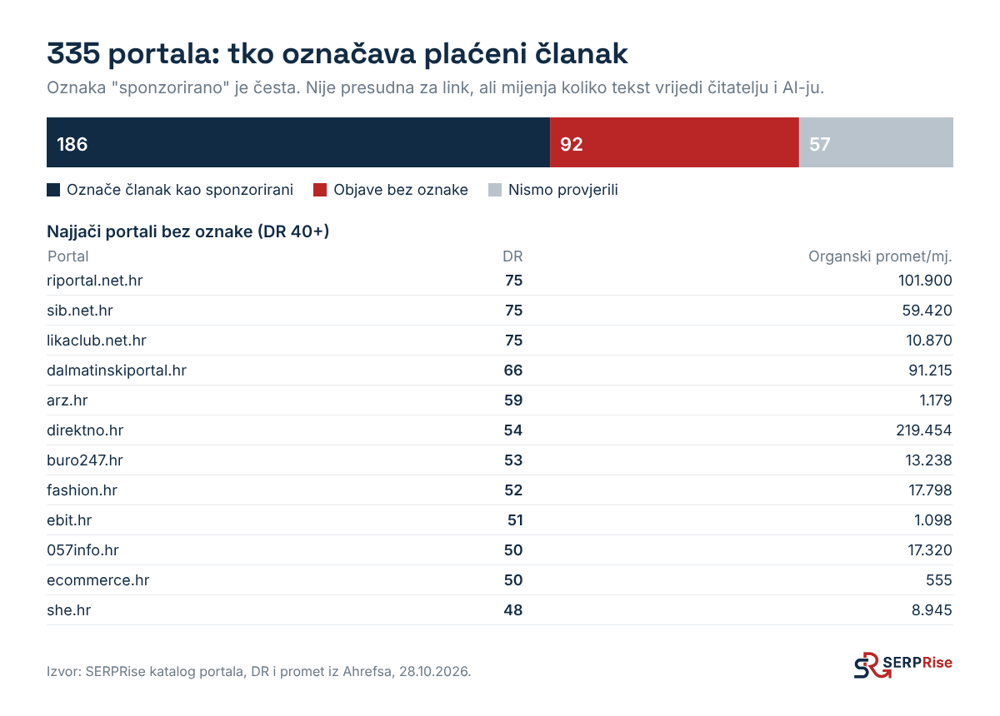

Vaš web kaže što vi mislite o sebi. Imenici kažu da postojite. Tek kad o vama pišu treće strane, AI ima razlog da vas preporuči nekome tko pita "tko je najbolji". Ovo je korak koji najviše pomiče kategorijska pitanja.
Trošakovisi o portalu i priči
Vrijeme2 do 6 tjedana po kampanji
Tkovi ili agencija
Dvije razine
Objava na portalu
Digitalni PR
Što je
Plaćeni ili dogovoreni članak na portalu koji spominje vašu tvrtku i linka na web
Vijest, istraživanje ili podatkovna priča koju novinari sami prenesu jer je zanimljiva
Kontrola
Vi birate portal, temu i tekst
Urednik odlučuje hoće li objaviti i kako
Oznaka
Često "sponzorirano"
Običan novinski članak
Brzina
Dani
Tjedni
Za što je najbolje
Redovit spomen na pravim mjestima, link, lokalni portali
Ime u velikim medijima, više članaka iz jedne priče
Kako odabrati portal
Prvo cilj. Link za Google (gledajte DR i tematsku bliskost), čitatelji (organski promet i publika) ili AI vidljivost (citira li AI taj portal za vaša pitanja).
Provjerite citira li ga AI. U tablici iz Koraka 2 pogledajte koje portale ChatGPT i AI pregledi već citiraju. Za lokalne usluge to su često regionalni portali, za B2B poslovni portali.
Provjerite stvarni promet u Ahrefsu ili Semrushu. Portal s visokim DR-om i malo prometa vrijedi manje nego što izgleda.
Provjerite je li indeksiran. U Google upišite site:portal.hr i pogledajte jesu li i noviji članci u indeksu.
Pitajte za oznaku. Tekst bez oznake "sponzorirano" čitatelj i AI čitaju kao običan članak. S oznakom ima manju težinu, ali i dalje donosi spomen.

U našem katalogu je 335 portala iz Hrvatske i regije: 186 označava plaćeni članak kao sponzorirani, 92 ne, a za 57 to još nismo provjerili. DR i promet iz Ahrefsa, 28.10.2026.
Što mora pisati u članku
Naziv tvrtke, usluga i grad u istoj rečenici. "Splitska ordinacija X, specijalizirana za dječju stomatologiju…" AI povezuje brend s kategorijom upravo iz takvih rečenica.
Jedna konkretna činjenica: broj klijenata, godina, rezultat, cijena. Članci s brojkama češće se citiraju.
Link na uslužnu stranicu, ne samo na naslovnicu.
Tema korisna čitatelju portala, a ne reklama. "Koliko košta implantat u Splitu 2026." bolje prolazi od "Ordinacija X je najbolja".
Ritam
Bolje 2 objave mjesečno kroz 6 mjeseci nego 12 u jednom tjednu. AI alati i Google vide kontinuitet, a vi svaki mjesec možete izmjeriti učinak (Korak 9) i promijeniti izbor portala.
Digitalni PR, korak po korak
Pronađite podatak koji samo vi imate: anketa među klijentima, analiza cijena, broj upita po gradovima, test kao naš s 45 ChatGPT odgovora.
Napišite priču u 5 rečenica: naslov s brojkom, što ste izmjerili, glavni nalaz, citat stručnjaka iz tvrtke, link na cijelu analizu na vašem webu.
Popis novinara: tko je u zadnja 3 mjeseca pisao o vašoj temi na poslovnim, tematskim i regionalnim portalima.
Pošaljite osobno, ne masovno. Ponudite ekskluzivu jednom mediju ako je priča jaka.
Pratite prenesene članke (Google Alerts za naziv tvrtke) i dodajte ih na web ("Pisali su o nama").
Kako čitati podatke
U anketi agencije uSERP među 116 SEO stručnjaka (rujan 2026.) digitalni PR je izglasan kao najjača taktika za linkove i AI citate (53,4%), a 81,9% ih vjeruje da linkovi utječu na to hoće li ih AI citirati. To je mišljenje stručnjaka, ne mjerenje. Ali poklapa se s onim što vidimo u hrvatskim AI odgovorima: za kategorijska pitanja citiraju se treće strane.
Tips and tricks
Poslovni portali poput poslovni.hr, lidermedia.hr ili bug.hr za dobru priču s novim podatkom ponekad objave članak i bez plaćanja.
Index ima javni cjenik objava na cjenik.index.hr. Dobro je mjerilo kad uspoređujete ponude.
Ne kupujte linkove na mrežama stranica koje prodaju linkove svima. Takve stranice lako se prepoznaju po tome što linkaju na desetke nepovezanih tvrtki, a to šteti i na Googleu.
Naša usluga: objave na portalima i digitalni PR
Imamo katalog od 335 hrvatskih portala s DR-om, prometom i oznakom sponzorirano, i za svakog klijenta biramo portale koje AI stvarno citira za njegova pitanja. Radimo i digitalni PR: podatkovne priče, tekst i slanje novinarima. Katalog i upit za odabrane portale: serprise.agency/portali/. Cijenu šaljemo za konkretan popis portala, jer se razlikuje od portala do portala.
Kako mi to radimo
Prije prve objave napravimo Korake 2 i 3 za pitanja klijenta. Portale biramo po tome koji su već izvori u AI odgovorima za njegovu kategoriju i grad, a tek onda po DR-u. Svaki članak ima brend, uslugu i grad u istoj rečenici i link na uslužnu stranicu. Mjesec nakon objave ponovimo test i gledamo je li se članak pojavio kao izvor.
Gotovo kad
Imate popis 5 do 10 portala koje AI citira u vašoj kategoriji
Prve 2 objave su vani, s brendom, uslugom i gradom u istoj rečenici